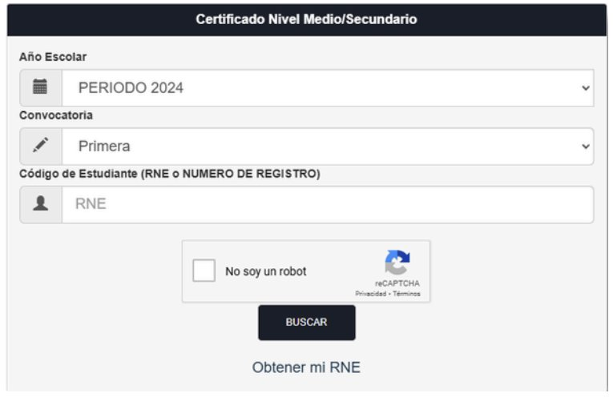
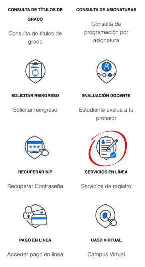
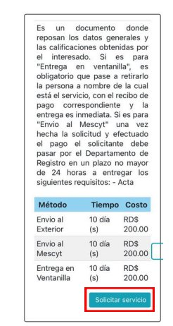
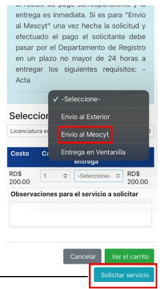

Entrar al Foro de Estudiantes
Haz preguntas, comparte experiencias y recibe ayuda de otros estudiantes del programa Work and Travel.
Guía interna para solicitar y legalizar tu récord de notas para el programa.
Si necesitas solicitar el certificado de bachiller, este trámite se realiza directamente en la página oficial del Ministerio de Educación.

Ingresa a la página de la UASD, dirígete al apartado de Estudiantes y selecciona Servicios en Línea. Luego busca la opción "Record de Notas Para No Graduados".
Ve al portal de la UASD y selecciona la sección de Servicios en Línea (ícono con el documento y el check marcado en rojo).

En el menú de método de entrega, selecciona "Envío al Mescyt". El costo es de RD$200. Toma hasta 10 días hábiles.

Como último paso, haz clic en "Solicitar Servicio" y realiza el pago correspondiente para completar el proceso.

Después de varias semanas, la UASD proporcionará un número de oficio. Con ese número podrás pagar la legalización en el MESCyT.
Entrega del récord legalizado el mismo día. Tiene un costo adicional que puede variar.
En las oficinas del MESCyT o en línea. El proceso puede tomar hasta dos meses.
El foro funciona en una página interna separada para que la página principal siga limpia y rápida. Puedes ver publicaciones públicas, pero para publicar, responder o reportar debes iniciar sesión.
Haz preguntas, comparte experiencias y recibe ayuda de otros estudiantes del programa Work and Travel.
Work and Travel Guide RD es una comunidad informativa para estudiantes interesados en el programa Summer Work and Travel / Visa J1.
No somos una entidad oficial del Gobierno de los Estados Unidos, la Embajada, sponsors ni agencias autorizadas.
La información publicada es orientativa y debe verificarse en fuentes oficiales. Los servicios, anuncios o recomendaciones no garantizan aprobación de visa ni resultados específicos.